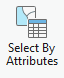
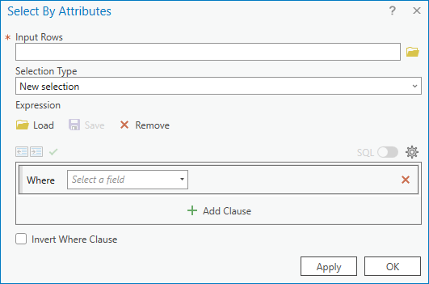
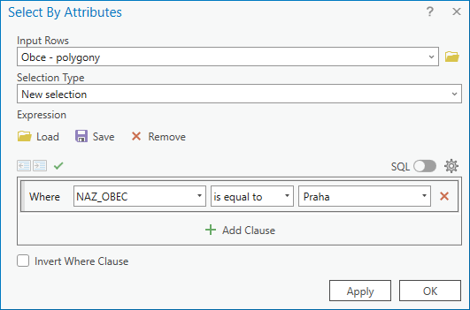
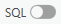

Souřadnicové systémy, atributové a prostorové dotazy
Cíle cvičení
-
vysvětlit, proč má každá vrstva souřadnicový referenční systém (CRS)
-
rozpoznat běžné souřadnicové systémy používané v Česku a ověřit je v ArcGIS Pro
-
provádět atributové dotazy nad popisem objektů
-
provádět prostorové výběry podle vztahu mezi vrstvami
-
pracovat s daty o vodních tocích, povodích a zastavěném území jako s podklady pro rozhodování v území
Proč nestačí, že vrstva „je na správném místě“
Každý prostorový prvek má geometrii uloženou jako souřadnice. Aby GIS věděl, co čísla znamenají a kde je má zobrazit, potřebuje znát souřadnicový referenční systém (CRS, dříve také SRS). CRS určuje zejména vztažný systém, způsob zobrazení zemského povrchu do roviny, jednotky a pořadí os.
- Geografický CRS pracuje se zeměpisnou šířkou a délkou, tedy zpravidla ve stupních.
- Projektovaný CRS převádí polohu do roviny; souřadnice pak obvykle vyjadřujeme v metrech. Je vhodný pro práci s délkou, plochou a vzdáleností v území.
Důležitá zásada
Stejná lokalita může mít v různých CRS různé číselné souřadnice. Neznamená to, že leží na jiném místě. Chyba vznikne tehdy, když je CRS vrstvy neznámý nebo nesprávně přiřazený.
Běžné CRS pro práci v Česku
| Souřadnicový systém | EPSG | Jednotky | Typické hodnoty souřadnic na území ČR | Kde se s ním setkáme |
|---|---|---|---|---|
| S-JTSK / Krovak East North | 5514 | metry | přibližně Y = −900 000 až −400 000; X = −1 250 000 až −900 000 |
státní mapová díla, katastr nem., velká část domácích dat |
| ETRS89 / UTM 33N | 3045 | metry | přibližně E = 440 000 až 520 000; N = 5 400 000 až 5 650 000 |
evropská data v západní a střední části ČR |
| ETRS89 / UTM 34N | 3046 | metry | přibližně E = 360 000 až 440 000; N = 5 400 000 až 5 650 000 |
evropská data ve východní části ČR |
| WGS 84 | 4326 | stupně | přibližně 14–19° E; 48,5–51,1° N |
GPS, souřadnice z terénu, webové formuláře, jiné mapové portály |
| WGS 84 / Pseudo-Mercator (Web Mercator) | 3857 | metry | přibližně X = 1 550 000 až 2 110 000; Y = 6 200 000 až 6 650 000 |
podkladové mapy a webové mapové služby |
UTM není v celé ČR jedna zóna
Česká republika zasahuje do zón 33N a 34N. Před použitím UTM je nutné ověřit, kterou zónu daná data používají. Zkratka „UTM“ sama o sobě není úplný název CRS.
Kontrola CRS v ArcGIS Pro
- V panelu Contents klikněte pravým tlačítkem na vrstvu → Properties.
- Na kartě Source ověřte položku Spatial Reference.
- CRS aktivní mapy ověřte v Map Properties → Coordinate Systems.
- Uložte si zejména název CRS a EPSG kód; oba údaje musí být součástí popisu dat, která přebíráte nebo předáváte dál.
Mapový CRS a CRS vrstvy
ArcGIS Pro dokáže vrstvy s korektně definovanými, ale různými CRS zobrazit společně. Mapové okno je při vykreslení převádí do CRS mapy. To je zobrazení za běhu (on-the-fly projection); nemění zdrojová data ani z nich nevytváří novou datovou sadu.
Definovat, nebo znovu zobrazit?
| Operace | Kdy ji použít | Co se stane |
|---|---|---|
| Define Projection | CRS dat známe, ale u vrstvy chybí nebo je špatně zapsán | pouze opraví popis CRS; souřadnice se nepřepočítávají |
| Project | CRS dat známe a chceme vytvořit kopii v jiném CRS | vytvoří novou datovou sadu s přepočítanými souřadnicemi |
| Geographic Transformation | při převodu mezi různými geografickými vztažnými systémy | určuje způsob přesného převodu mezi referenčními rámci |
Neznámý CRS nezkoušejte metodou pokus–omyl
Pokud neznáte původ CRS, dohledávejte jej v metadatech, dokumentaci poskytovatele nebo u autora dat. Nesprávné použití Define Projection může vrstvu jen opticky „přesunout“ na zdánlivě správné místo a znehodnotit následné vzdálenosti, plochy i prostorové výběry.
Vektorové podklady pro krajinu, vodu a stavby
Vektorová data z předchozího cvičení nyní využijeme jako podklady k jednoduchým otázkám o území. Vedle hranic katastrálních území je vhodné používat vrstvy, které popisují přírodní systém a skutečně zastavěné území.
| Vrstva | Geometrie | Příklady otázek |
|---|---|---|
| Hranice povodí | polygony | Do kterého povodí zasahuje řešené území? |
| Vodní toky | linie | Které úseky jsou povrchové / podzemní, splavné / nesplavné? |
| Vodní plochy a záplavová území | polygony | Které části návrhu jsou ve vztahu k vodě či rizikovému území? |
| Katastrální území | polygony | Jaké administrativní jednotky lokalita protíná? |
| Intravilán / zastavěné území | polygony | Leží záměr uvnitř sídla, na jeho okraji, nebo ve volné krajině? |
Doporučené zdroje pro demonstraci
- Národní katalog otevřených dat — hledání datových sad „hranice“
- RÁIN — Urban Atlas / intravilán
- DIBAVOD — digitální báze vodohospodářských dat
Práce s daty z portálu
Portál je rozcestník, nikoli záruka jednotného formátu. U každé datové sady je vhodné ověřit poskytovatele, datum, licenci, popis atributů, CRS a způsob distribuce — stažení souboru, WFS/WMS nebo ArcGIS REST službu.
Atributové dotazy
Atributový dotaz (Attribute Query) je metoda výběru/filtrace prvků na základě hodnot jejich atributů. Doplňuje tak metodu interaktivního výběru prvků z 1. cvičení. Základem je pravidlo pro výběr – tzv. výraz (Expression). ArcGIS Pro umožňuje sestavovat výrazy interaktivně pomocí dialogu, nicméně pro využití plného potenciálu výrazů je vhodné využít kód v jazyce SQL.
Atributový dotaz (nad daty v mapě): Map → Select By Attributes → vyplnit údaje do dialogu nástroje... Select features using attributes
  


Do pole Input Rows je automaticky předvyplněna vrstva vybraná v obsahu mapy
Pomocí přepínátka

lze měnit zápis mezi interaktivním dialogovým zadáním a výrazem v jazyce SQL.Jak číst výraz
V dotazu vždy rozlišujte název pole, operátor a hodnotu. Textové hodnoty se obvykle zapisují do apostrofů, číselné nikoli. Složitější podmínky spojujeme pomocí AND, OR a NOT.
| Otázka | Příklad výrazu | Poznámka |
|---|---|---|
| Je hodnota rovna danému kódu? | typ = 'povrchový' |
text v apostrofech |
| Je číslo větší než mez? | delka_km > 10 |
číslo bez apostrofů |
| Obsahuje název hledané slovo? | nazev LIKE '%Vltava%' |
% nahrazuje libovolný počet znaků, _ nahrazuje jeden znak |
| Platí obě podmínky? | splavny = 1 AND typ = 'povrchový' |
závorkami určujeme pořadí podmínek |
| Chybí hodnota? | spravce IS NULL |
NULL není prázdný text ani nula |
Datový typ rozhoduje
Správný výraz vychází z datového typu pole. Kód 01 může být text, nikoli číslo; datum se dotazuje jinou syntaxí než text. Před sestavením dotazu vždy otevřete atributovou tabulku, přečtěte názvy a hodnoty polí a neodvozujte jejich význam pouze z názvu.
Příklad k vyzkoušení | testování atributových dotazů na skutečných datech
| atribut | datový typ | popis |
|---|---|---|
| stop_name | string |
Název zastávky |
| routes_nam | string |
Označení linek, které obsluhují zastávku, ve formátu -cislolinky-,-cislolinky- řazeno vzestupně |
| route_type | integer |
ID druhu dopravy, které obsluhují zastávku, 0=tramvaj, 1=metro, 2=vlak, 3=autobus, 4=přívoz, 7=lanovka, 8=tramvaj i autobus |
| on_request | integer |
Zastávka na znamení 0=není na znamení, 1=je na znamení |
| platf_len | float |
Délka nástupiště (metry) |
Prostorové dotazy
Prostorový dotaz vybírá prvky jedné vrstvy podle jejich vztahu k prvkům druhé vrstvy. Odpovídá na otázky typu „které vodní toky leží v povodí?“, „které parcely se dotýkají toku?“ nebo „které plochy zastavěného území protíná navržený koridor?“
V ArcGIS Pro otevřete Map → Select By Location. Poté vždy určete:
- Input Features — vrstvu, ze které chceme vybírat;
- Relationship — prostorový vztah, který má platit;
- Selecting Features — vrstvu, vůči níž výběr provádíme;
- případně Search Distance — vzdálenost, například
100 m; - způsob práce s dřívějším výběrem: nový, přidat, odebrat nebo vybrat průnik.
Vztahy, které budeme používat nejčastěji
| Vztah v ArcGIS Pro | Jak číst otázku | Příklad v kontextu vody a sídla |
|---|---|---|
| Intersect | má alespoň jeden společný bod | Které parcely se protínají s koridorem toku? |
| Within | leží celé uvnitř | Které body měření leží uvnitř vybraného povodí? |
| Completely within | leží celé uvnitř, nedotýká se hranice | Které plochy záměru jsou celé v intravilánu? |
| Contains | obsahuje vybraný prvek | Která povodí obsahují vybrané odběrné místo? |
| Boundary touches | dotýká se hranicí | Která území sousedí s katastrálním územím? |
| Within a distance | leží do zadané vzdálenosti | Které objekty jsou do 100 m od vodního toku? |
| Crossed by the outline of | hranice jedné vrstvy kříží druhou | Které plochy protíná hranice řešeného území? |
Výsledek závisí na geometrii i na formulaci otázky
„Leží v povodí“ a „protíná povodí“ nejsou stejná otázka. U polygonů zvlášť rozlišujte vztahy intersect, within a completely within. Před spuštěním nástroje odpovězte nahlas: Co vybírám? Vůči čemu? Jak přesně má prostorový vztah vypadat?
Doporučený postup při práci s výběrem
- Ověřte, že vrstvy mají správně definované CRS a v mapě se překrývají smysluplně.
- Nejprve proveďte jednoduchý atributový výběr, například pouze povrchových nebo splavných úseků toku.
- Až poté proveďte prostorový výběr vůči povodí, intravilánu nebo řešenému území.
- Výsledek zkontrolujte v mapě a atributové tabulce; ověřte počet vybraných prvků.
- Má-li být výsledek použit dále, exportujte jej jako novou vrstvu se srozumitelným názvem a zdokumentujte použitá kritéria.


| Intersect | A |
| Intersect (DBMS) | A |
| Contains | A |
| Contains Clementini | A |
| Within | A |
| Within Clementini | A |
| Are identical to | A |
| Have their center in | A |

| Intersect | A, C |
| Intersect (DBMS) | A, C |
| Within | A, C |
| Completely within | A |
| Within Clementini | A |
| Have their center in | A, C |
| Boundary touches | C |

| Intersect | A, C |
| Intersect (DBMS) | A, C |
| Within | A, C |
| Completely within | A |
| Within Clementini | A |
| Have their center in | A, C |
| Boundary touches | C |

| Intersect | A, C, D |
| Intersect (DBMS) | A, C, D |
| Contains | A, C, D |
| Completely contains | A, D |
| Contains Clementini | A, D |
| Have their center in | D |
| Boundary touches | C |

| Intersect | A, C, D, E, F, G, H, I, J |
| Intersect (DBMS) | A, C, D, E, F, G, H, I, J |
| Contains | G, H |
| Completely contains | G |
| Contains Clementini | G, H |
| Within | F, H |
| Completely within | F |
| Within Clementini | F, H |
| Are identical to | H |
| Boundary touches | C, E |
| Share a line segment with | F, G, H, I, J |

| Intersect | A, C, D, E, F, G, H, I, J, K, L, M, N, O |
| Intersect (DBMS) | A, C, D, E, F, G, H, I, J, K, L, M, N, O |
| Within | A, D, G, H, I, O |
| Completely within | A |
| Within Clementini | A, D, G, H, I |
| Boundary touches | F, G, H, I, K, L, M, N, O |
| Share a line segment with | G, I, J, K, M, O |
| Crossed by the outline of | C, E, H, L, N |
| Have their center in | A, C, D, E, G, H, I, J, O |

| Intersect | A, B |
| Intersect (DBMS) | A, B |
| Contains | A, B |
| Completely contains | A |
| Contains Clementini | A |
| Have their center in | A, D |
| Boundary touches | B |

| Intersect | A, C, D, E, F, G, H, I, J, K, L, M, N, O |
| Intersect (DBMS) | A, C, D, E, F, G, H, I, J, K, L, M, N, O |
| Contains | A, D, G, H, I, O |
| Completely contains | A |
| Contains Clementini | A, D, G, H, I |
| Boundary touches | F, G, H, I, K, L, M, N, O |
| Share a line segment with | G, I, J, K, M, O |
| Crossed by the outline of | C, E, H, L, N |
| Have their center in | E, I, L |

| Intersect | A, C, D, E, F, G, H, I, J, K, M |
| Intersect (DBMS) | A, C, D, E, F, G, H, I, J, K, M |
| Contains | C, E, H, M |
| Completely contains | C |
| Contains Clementini | C, E, H, M |
| Within | F, G, H, M |
| Completely within | F |
| Within Clementini | F, G, H, M |
| Are identical to | H, M |
| Boundary touches | D, E, G, H, I, J, M |
| Share a line segment with | D, H, I, M |
| Crossed by the outline of | A, E, G, J, K |
| Have their center in | C, E, F, G, H, K, L |
Select features by location Select Layer By Location (Data Management) Select By Location graphic examples
Úlohy k procvičení
Voda a sídla
Lokalita obsahuje vrstvy povodi, vodni_toky, intravilany, katastralni_uzemi.
- Vlastnostmi vrstvy ověřte CRS alespoň u jedné lokální vrstvy a jedné webové služby. Která vrstva je v S-JTSK a která v ETRS89?
- Atributovým dotazem vyberte povrchové vodní toky. Pokud sada obsahuje vhodný atribut, omezte výběr dále na splavné úseky.
- Prostorovým dotazem zjistěte, které vybrané úseky toku intersect řešené území.
- Vyberte plochy intravilánu, které se s řešeným územím překrývají. Porovnejte výsledek pro vztah Intersect a Completely within.
- Vyberte prvky ležící do zvolené vzdálenosti od vodního toku. Uveďte, proč je pro tento krok nutné pracovat v CRS s metrickými jednotkami.
Otázky k diskusi
- Kdy je katastrální hranice vhodná jako administrativní kontext a kdy pro popis skutečného zastavěného území lépe poslouží intravilán?
- Jak by se změnila interpretace výsledku, kdybychom použili Within namísto Intersect?
- Které podklady lze využít pouze pro orientaci a které lze použít jako vstup do navazující analýzy? Jakou roli při tom hrají metadata, licence a přesnost dat?
Shrnutí
Po tomto cvičení byste měli umět:
- vysvětlit, proč GIS potřebuje CRS a jaký je rozdíl mezi geografickým a projektovaným CRS;
- rozpoznat podle jednotek a řádu hodnot nejběžnější CRS používané v Česku;
- ověřit CRS vrstvy i mapy v ArcGIS Pro;
- rozlišit operace Define Projection a Project;
- sestavit a zkontrolovat základní atributový dotaz;
- formulovat prostorový dotaz jako kombinaci vybírané vrstvy, referenční vrstvy a vztahu;
- interpretovat výběr nad vodními toky, povodími a intravilánem jako podklad pro rozhodování v území.
Doplňkové zdroje: